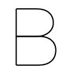
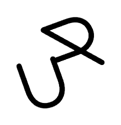
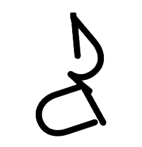
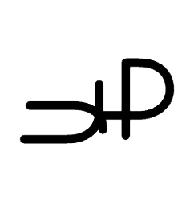
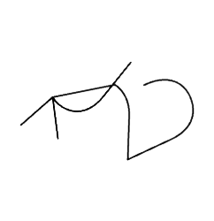
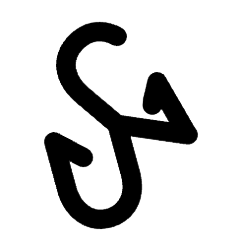

This project translates literary characteristics into visual typographic and chromatic elements. Each book generates a unique composition in which letterforms and colour reflect aspects of the narrative, emotional tone, structure, and literary genre.
Select one or more glyphs per letter to guide its evolution.
Typographic Parameters
The glyphs transform according to different textual dimensions:
Plot density
Simpler stories create cleaner structures, whereas complex narratives result in fragmented glyphs with multiple structural divisions.

Base Glyph

Simple Plot

Dense Plot
Amount of Locations
The number of spaces or locations occupied by the narrative influences the variety of rotation angles in the results.
Base Glyph

Few Locations
Many Locations
Text length
Short texts correspond to lighter stroke weights, while longer narratives produce bolder typographic forms.
Base Glyph

Short Text

Long Text
Chromatic System
Each literary genre is associated with a specific colour logic:
Literary Fiction
Soft analogous palettes and reduced saturation create subtle transitions, evoking introspection, nuance, and emotional continuity
Example 1
Example 2
Example 3
Genre Fiction
Highly saturated warm palettes generate visual intensity, reinforcing action, excitement, and dramatic energy.
Example 1
Example 2
Example 3
Historical Fiction
Muted and desaturated tones suggest memory, age, and archival imagery, evoking a sense of temporal distance.
Example 1
Example 2
Example 3
Crime/Thriller
Strong contrasts between dark and luminous tones heighten tension, unease, and suspense.
Example 1
Example 2
Example 3
Experimental/Postmodern Fiction
Complementary colour relationships produce visual friction and instability, reflecting disruption.